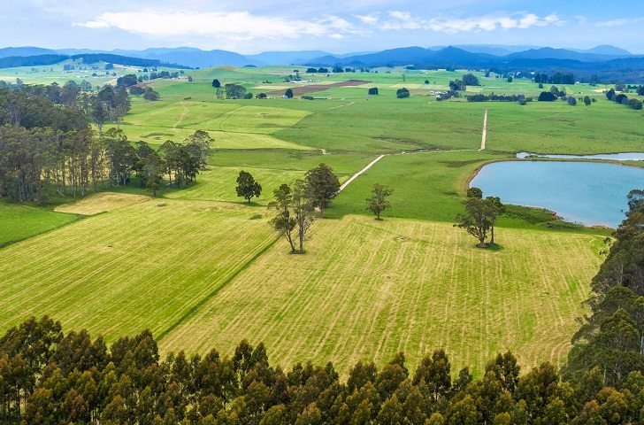
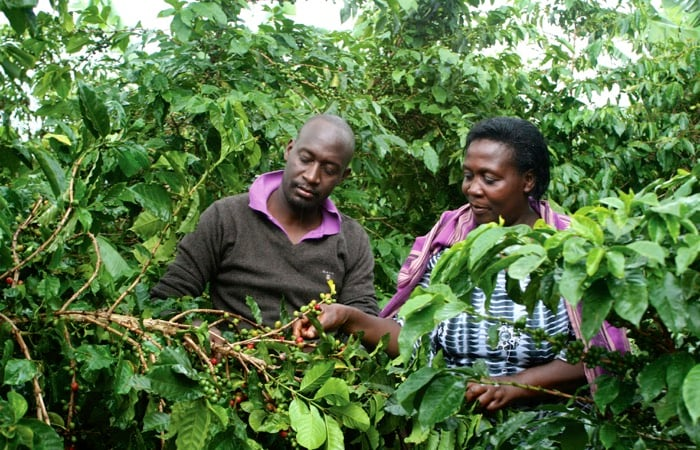

Welcome to Uganda Agricultural Explorer

Agriculture plays a vital role in Uganda’s economy and provides livelihoods for millions of people. Uganda produces a wide variety of crops including coffee, bananas, maize, cassava, and tea.
This website helps you explore important crops grown in Uganda, their regions, and their uses.
Explore Major Crops
Visit our crops directory to discover major food and cash crops grown across Uganda.
Agriculture in Uganda

Uganda's climate and fertile soils make it ideal for agriculture. Many farmers grow crops both for food consumption and export. Coffee remains one of the country's largest agricultural exports.